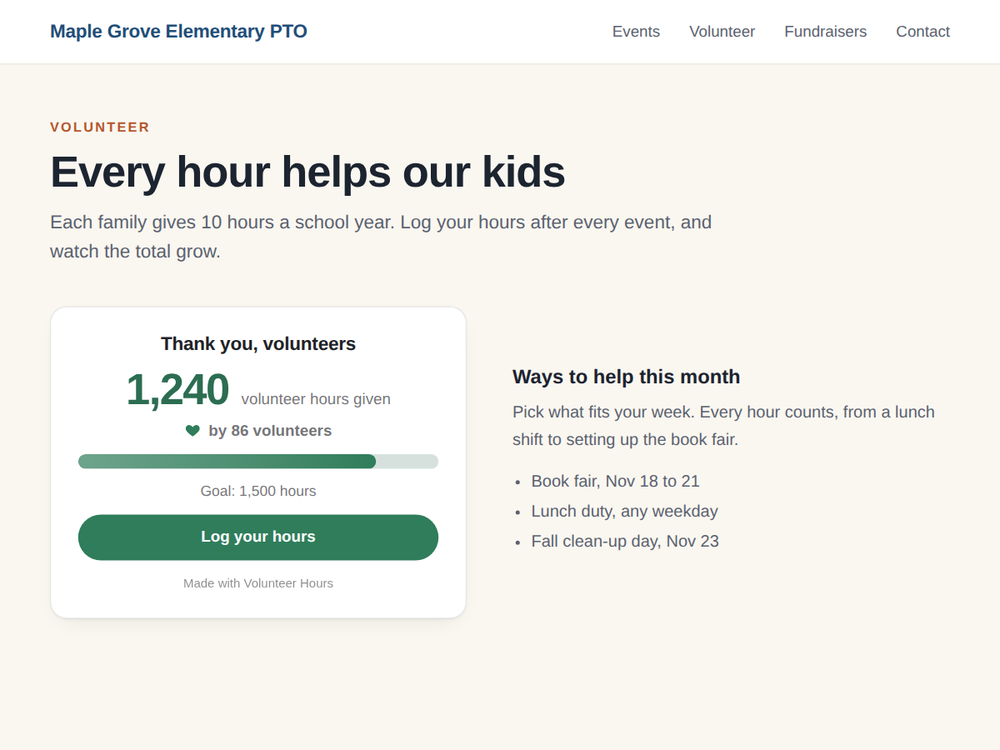

Volunteer Hours: Hour Tracker
Add up volunteer hours your families log online
- Live total of hours sent with your form
- Goal bar and number of volunteers
- Dashboard list of who gave how many hours
- Several forms, paper hours, CSV (Premium)

What it does
Volunteer Hours adds up the hours your families log with a form and shows the total on your site, live. A school PTO that asks each family for 10 hours a year, a youth league run on parent shifts: put "1,240 volunteer hours given by 86 volunteers" on the volunteer page and let it grow by itself.
Add a form with a Number field called Hours, then add the widget. It finds that form and its hours field without any setup. Every time someone sends the form, the total goes up. A goal bar shows how close you are and a button leads to the form. The same works for read-a-thon minutes, walk-a-thon laps or pages read: rename the text and pick the field.
The app dashboard lists who gave how many hours and when they last logged. Visitors only ever see the totals; names and emails stay in your dashboard.
The free plan counts one form, as a big number or a goal bar, with a small credit link under it. Premium adds up several forms, adds hours from paper sign-in sheets, starts the count again each school year from a date you pick, adds the circle style, shows everyone in the dashboard with who is still short of the required hours, downloads the list as CSV, and removes the credit link.
Price
Free
- One hours form, live total
- Big number or goal bar
- Volunteers count and a button
- Small credit link
Premium
$4/month, 20% off yearly
- Add up several forms
- Paper hours and yearly reset
- Full volunteer list with CSV
- Remove the credit link